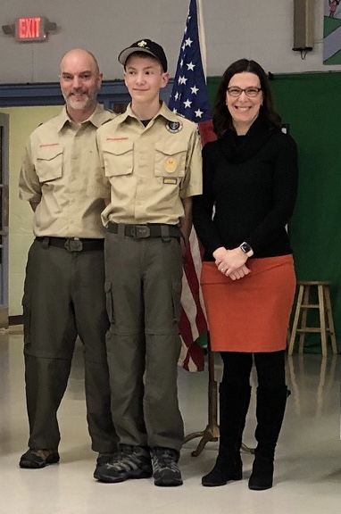
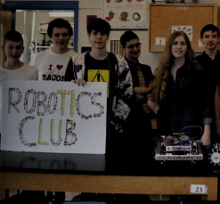

May 2017- Present
Since joining Medfield’s Troop 89 I have dedicated much of my time to troop activities including camping, community service and weekly meetings. I have served in several leadership positions including being elected by my peers as a Patrol Leader and currently as Assistant Senior Patrol Leader. I was also appointed by our Scoutmaster to serve as Troop Guide: a mentor for incoming scouts. Recently, I reached the Life scout rank, the second highest rank in scouting and began work on Eagle. I am also in charge of our website, more information is available on the projects page
The Troop 89 website can be visited here 
At this Court of honor, where awards and ranks are presented to scouts, I received my life rank, making me the youngest Life scout in the troop
2015 - Present
One of my greatest passions is for robotics, I have built several completely autonomous robots from scratch, and programmed them in C++ and Python. If you would like to learn about my robots, you can look at them on the projects page.
It is a source of great pride to me that I was invited to join the highschool robotics team while only in seventh grade, making me the teams youngest member of all time. That's me on the far left of this photo.

Photo Credit goes to the Medfield High School yearbook photographers, acessed through https://archive.org/details/medfieldhighscho2019medf. Page 154
Elected 2017
In sixth grade I was elected to the Student Council where I organized dances, spirit days and fundraisers. One such fundraiser was a volleyball tournament where I worked with a charity who assisted people with mental disabilities and coordinated how our school could donate.
Summer 2019 - Present
This summer I gave up dessert, followed my carefully planned exercise program, and practiced every other day from the last day of school to the first day of school because I was on the cross country team and I was determined not to let them down. My training made me a prized runner and knowledgeable teammate, and I brought to cross country my own brand of leadership which drew compliments from all my coaches.
2017 - Present
I take great joy from playing tennis and improving my skills which I have done through private lessons and summer programs
2018
In seventh grade I had the opportunity to attempt the New England Math Leage challenges with the middle school math team.
2017
In sixth grade I had the opportunity to participate in the middle school theater. I quickly rose to head of lighting, and I made programs to automate the lights so future plays could be easily set up by plugging together a few of my premade and tested lighting combinations.